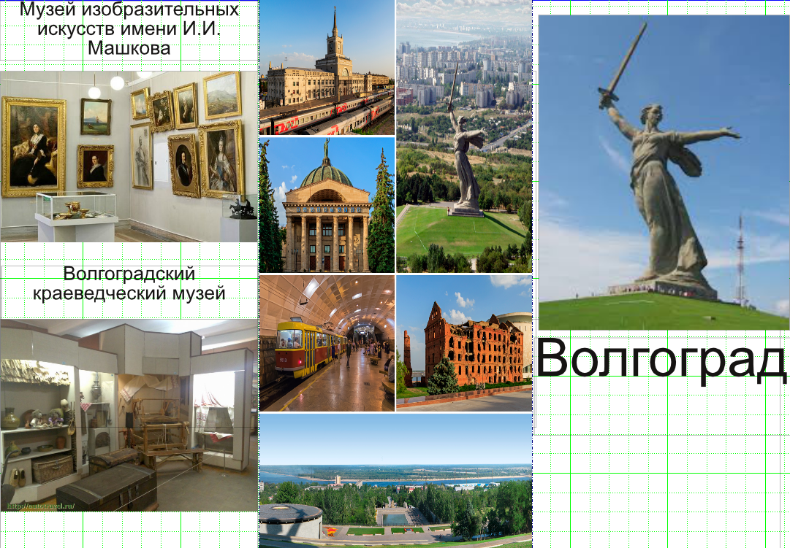
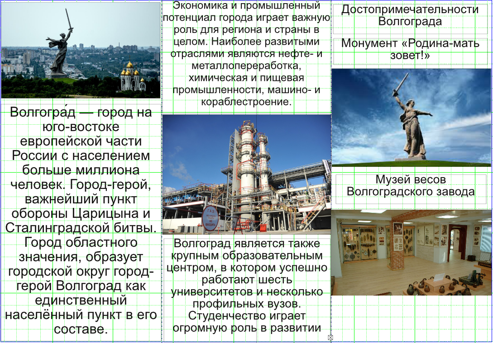
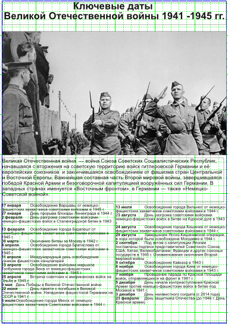
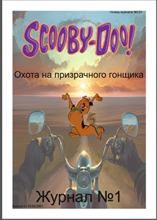
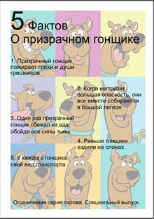

Буклет — издание в виде одного листа печатного материала, сфальцованного любым способом в два или более сгибов. Традиционно буклеты изготавливаются на бумаге из листа формата А4 или меньше (рекламные издания, печатаемые форматом А4 и больше, называются проспектами). Следует отличать буклет от листовки и брошюры, потому как листовкой считается печатная продукция с одним сгибом, либо вовсе без них. Под брошюрой же понимается непериодическое текстовое книжное издание, состоящее из двух основных элементов: блока и бумажной обложки, и скрепленных между собой при помощи шитья, скрепкой, ниткой или верёвкой и так далее.

Плакат — это не только красивые изображения знаменитостей, но и броское изображение с кратким текстом, выполненное в агитационных, рекламных или учебных целях. Современный плакат в первую очередь ассоциируют с рекламой, что не совсем верно. Не менее популярен информационный и дизайнерский плакат.
Информационный плакат чаще всего встречается в виде различных афиш. Главная цель таких плакатов — донесение до аудитории важной культурной информации, анонс мероприятий.

Журна́л — печатное периодическое издание. Как и газета, журнал является одним из основных средств массовой информации и пропаганды, оказывает влияние на общественное мнение, формируя его в соответствии с интересами определённых идеологических групп, общественных классов, политических партий, организаций.
Скачать журнал
 |
 |